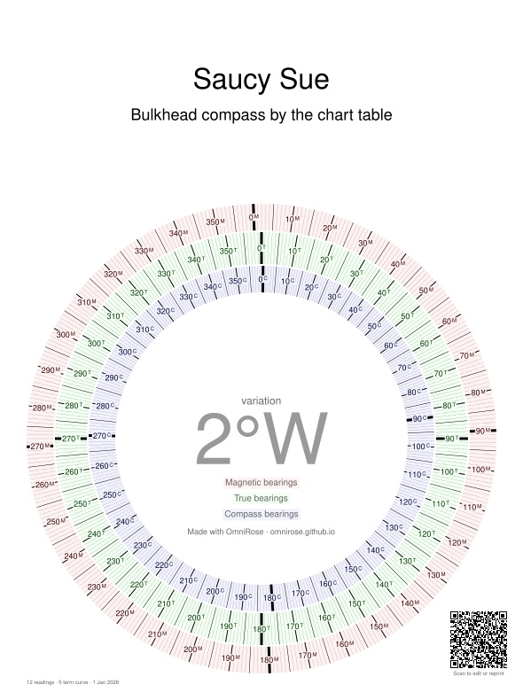

Using your table and rose
You've got a fresh printout. Here's how to get the most out of it, using Saucy Sue, one of the example boats, in waters with 2°W of variation.
The deviation table
Headings run down the page from 000° at the top to 360° at the bottom, and deviation runs across, West on the left and East on the right. The red dots are your readings and the black line is the smooth curve OmniRose fitted through them.
To find the deviation on a heading, find the heading on the left and follow its line in until it meets the curve. Then look straight up (or down) to read the deviation. Lines that stop short of the centre are westerly, lines that cross it are easterly.
The left side is magnetic heading, so the table answers "I want to steer 047°M; what does the compass say?" directly. Going the other way ("the compass says 090°; what's that magnetic?") is slightly circular, because the deviation depends on the magnetic heading you haven't worked out yet. Look up the deviation at the compass heading, apply it, then look again at the result and correct once more. That's the "second round of correction" mentioned on the card. Or use the combined table.
The combined table
The combined table is the same curve with compass headings down the right-hand side instead. Each compass line is drawn at the magnetic heading it really corresponds to, so it meets the curve in the right place. Use the left side when you start from magnetic and the right side when you start from the compass, and there's no second round to do.
The conversion rose

Each page is drawn for one value of variation, shown big in the middle. The three rings are lined up so that the same direction sits at the same angle on all three. The superscript on each number (M, T or C) tells you which ring you're on.
Notice the blue compass ring isn't evenly spaced: it's stretched in some places and squashed in others. That's your deviation curve, built in.
From the chart to the helm
You've plotted a course of 045°T. Find 45 on the green ring and read straight out to the red ring and in to the blue ring:
| True | 045° |
|---|---|
| Magnetic | 047° |
| Compass | 050°: tell the helm to steer this |
From the helm to the chart
The helm reports you've been steering 090° by the compass. Find 90 on the blue ring and read outwards: that's 085°M and 083°T, which is what you lay off on the chart for your dead reckoning.
Pick the page that matches the variation where you're sailing. If you're crossing an area where variation changes, print the range you need: OmniRose can print up to 10 pages at once, one per degree.
Taking bearings
Deviation depends on the boat's heading, not on the direction you're looking. So the blue compass ring is for headings from the compass it was made for.
- Bearings with a hand-bearing compass, taken away from the boat's iron, are magnetic. Use just the red and green rings to convert them to true.
- Bearings with the steering compass (sighting across it) are affected by the deviation for the heading the boat is on at the time. Look that up on the table and apply it to the bearing, then convert to true.
Looking after it
- Print at actual size (100%, not "fit to page") so the rings stay round and true.
- Laminate it or slip it into a clear pocket, and keep it next to the compass or at the chart table.
- Each compass needs its own table. The steering compass and a bulkhead compass sit in different places and see different deviations.
- Keep your link, or just scan the QR code on the printout, to make a fresh copy or a rose for a new cruising area.
- Variation creeps by a fraction of a degree each year. Check your chart (or a current magnetic model) every few seasons and print a new rose if it has moved a whole degree.
- Re-swing after changes near the compass, or if you start to suspect it.